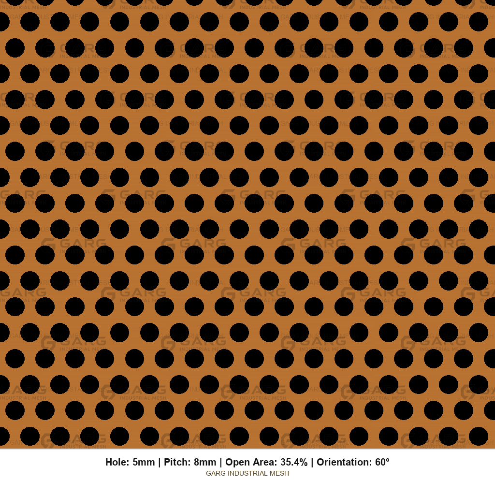

Unperforated borders
Blank Margin and Unperforated Border on Brass Sheet
The blank edge is the unperforated strip around the brass sheet with holes — where you clamp, weld, hem, gasket, and hide fasteners. We customize 0–100 mm every day. Beyond 100 mm on request. Spec the millimetres.
What a blank edge is
Also called a margin or unperforated border. Pattern stops inside this strip. Finished cut size should include the blank edge. Incomplete (breakout) holes at a trim line are normal when the margin is small relative to pitch — tell us whether that is acceptable.
Our custom range
| Blank edge / margin | Availability |
|---|---|
| 0–100 mm | Customized — standard quoting range. Equal or unequal per side. |
| Above 100 mm | Available on request. |
| 0 mm (full perf to edge) | Expect partial / breakout holes at the edge unless you forbid them. |
Write margins per side if they differ: LE 15 / RE 15 / TE 40 / BE 40 mm. “20 mm border” means all four sides equal unless you say otherwise.
Why margins matter on brass
| Concern | What the blank edge does |
|---|---|
| Mounting / framing | Solid land for screws, welds, hems, clamps on elevator and cladding frames. |
| Strength | Borders carry edge loads and reduce tear-out at fasteners. |
| Weight | Borders are solid brass. Wide margins raise shipping weight. |
| Appearance | Clean frame line around a decorative brass screen field. |
| Speaker / vent land | Solid strip for gasket or mounting ring on brass speaker grilles and ventilation grilles. |
No-margin vs safe-margin
| Approach | When it fits | What to expect |
|---|---|---|
| 0 mm | Full-field decorative look | Edge hole breakout common; weaker edges. |
| Safe margin | Frames, elevator returns, weld lands | Often 15–40 mm to start; then match the frame drawing. |
Margins vs open area accounting
Catalogue OA% is for the perforated field. Blank margins reduce overall open fraction on the finished brass panel. Airflow for a brass ventilation grille follows the perforated zone. Weight must include solid borders.
RFQ examples
Patterns that still need a solid border




Ready for end-use context? brass perforated sheet applications. Full checklist: how to order perforated brass sheet.